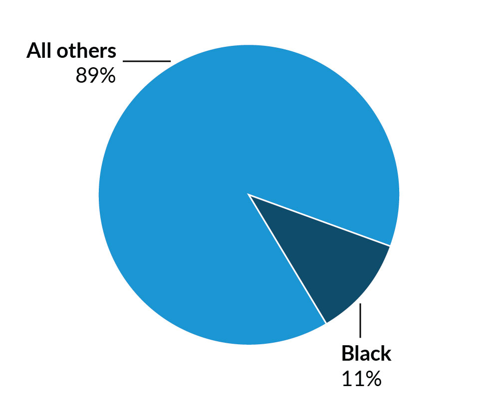
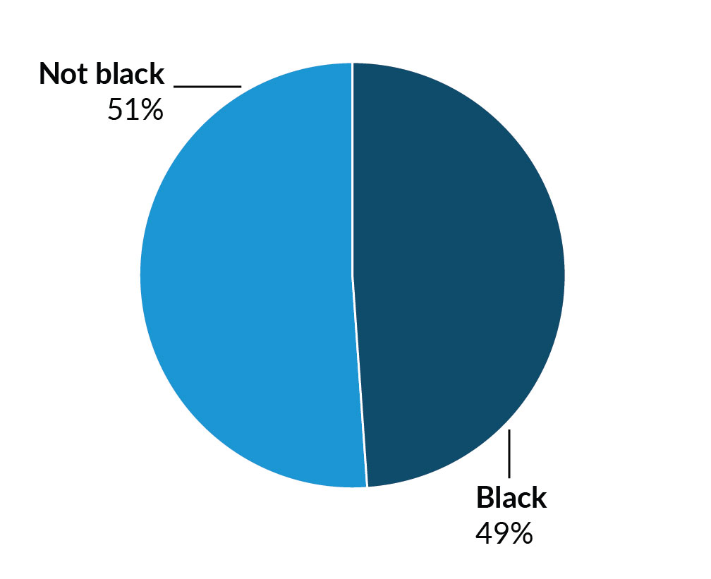
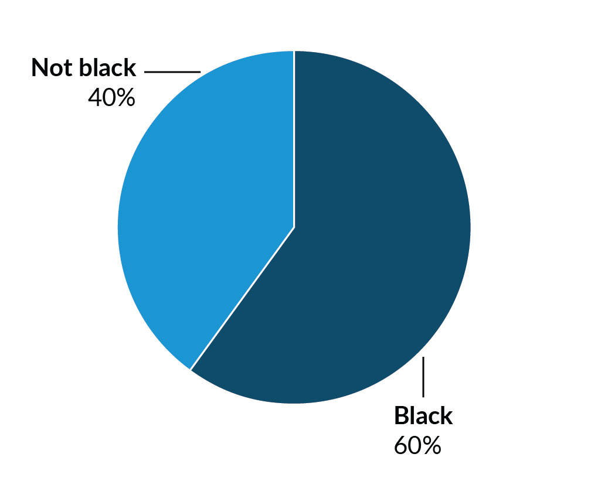
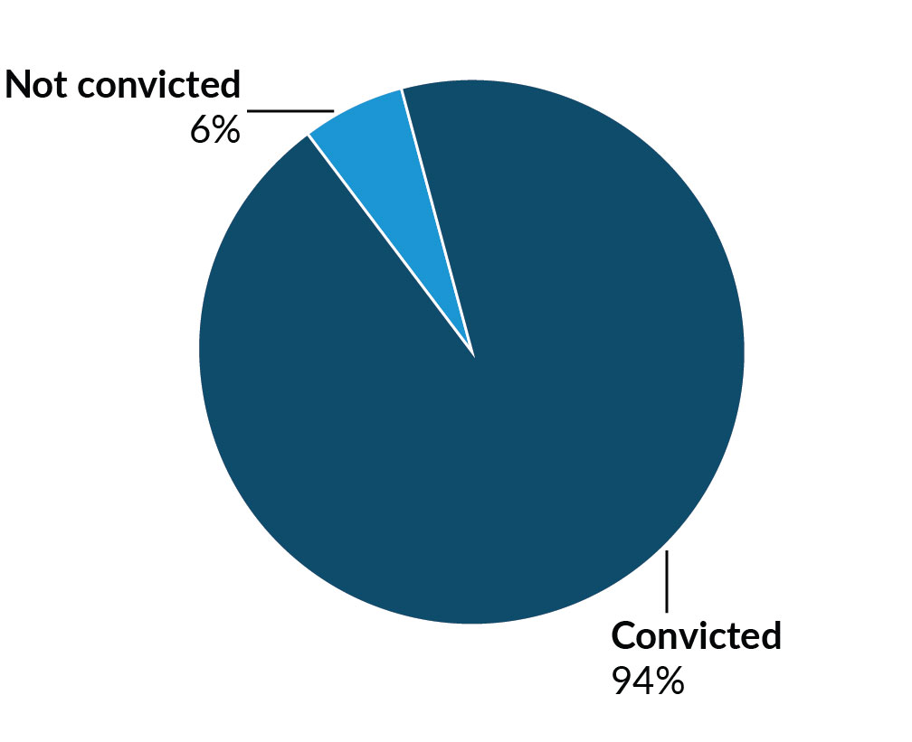

Black people are incarcerated at a rate over five times that of white people nationwide (and significantly higher in many states). Other racial and ethnic groups face disparities in imprisonment, but major data gaps make it difficult to measure the extent of these disparities. These same gaps prevented us from looking at the full picture of racial and ethnic inequalities in long prison terms.
The black incarceration rate has decreased over the past decade, likely as a result of reforms for less serious drug offenses. But people serving the longest terms remain untouched by such policy changes.
11 percent of Pennsylvania residents are black

49 percent of people in Pennsylvania prisons are black

60 percent of people serving the longest terms in Pennsylvania prisons are black

Though most states have seen a decline in racial disparities among people serving shorter prison terms, the story is less consistent among those in prison the longest. In recent years, racial disparities have decreased in at least 42 states for people serving less than 10 years. But in at least 19 states, disparities actually grew among people serving 10 or more years. Current reforms fail to address these glaring disparities because they largely leave out those serving the longest terms.
Looking at the top 10 percent of people serving the longest prison terms in each state, we found that many people were sentenced for crimes committed in their youth. Some have been incarcerated for more than half their lives. In California, this is true for more than 5,500 people; in Florida, nearly 3,000.
Recent Supreme Court rulings have upheld that youth under age 18 are fundamentally different from adults—that because their brains have not fully developed, they are less capable of self-control and responsible decisionmaking—and cannot be sentenced to death or mandatory life without parole. These rulings offer hope to thousands of people serving life sentences for crimes they committed before age 18.
These young people are still given extremely long sentences, including life without parole. And even those given a chance at parole are often blocked by parole boards that, decades later, continue to judge them solely by their original offense.
Samantha Harvell, Urban Institute
Rethinking sentencing for young adults
94 percent were convicted of violent offenses

One in five people in prison for at least 10 years is a black man incarcerated before age 25. Comparatively, just over one in eight in the general prison population is a black man incarcerated as a youth. This staggering disparity reflects and perpetuates social inequalities, keeping a disproportionate number of young black men in prison and out of their communities for long periods.
Women in prison are a rapidly growing group—and in most states, a growing share have served more than 10 years. In Michigan, 8 percent of women in prison had served at least a decade as of 2000; by 2013, that number was 13 percent. In Wisconsin, this figure rose from 1.8 to 6.5 percent over the same period. Across the 44 states we looked at, over 5,500 women had been in prison for at least 10 years.
Overall, women are most likely to be sent to prison for a property or drug conviction than a violent conviction. In the most recent year of data available, only 37 percent of women in prison had a violent conviction, compared with 55 percent of men. But among people serving the longest terms, a full 92 percent of women had been convicted of a violent offense, roughly on par with men (91 percent).
Some women serving long sentences for drug offenses may have been charged as accomplices in drug conspiracies because of their relationships with men engaged in criminal activity. In some sentencing schemes, especially at the federal level, women may be held equally accountable for crimes committed by their partners despite having little or no intentional involvement.
Women are also more susceptible to the challenges that come with being an incarcerated parent: as of 2010, 62 percent of women in state prison had children, compared with 51 percent of men.
As the number of women serving long prison terms continues to grow, more research is needed to understand how they are uniquely affected by incarceration.
Women leaving prison aften add caretaking to their reentry challenges
Mothers who leave prison often don’t have time to get their lives in order
More than 30 percent of people who have spent the most time in prison are at least 55 years old, compared with just over 10 percent of the overall prison population.
More people serving longer prison terms means that more people are growing old in prison. Between 1993 and 2013, the share of people 55 or older in state prisons increased by 400 percent. This was caused in part by an influx of older people, but it also reflects a greater proportion of people serving longer prison terms.
Mass incarceration of the elderly is a moral and economic problem
Health care in prison is also extremely expensive, and people require more support as they grow older. The annual cost of incarcerating someone over age 50 is twice the cost for the average person.
An aging prison population is one of the clearest signs of a prison system designed to punish people, rather than ensure public safety. Keeping elderly people in prison, especially after they have lost their physical or mental capacities, serves no practical purpose—as demonstrated by the extremely low rates of recidivism among older people who are eventually released.